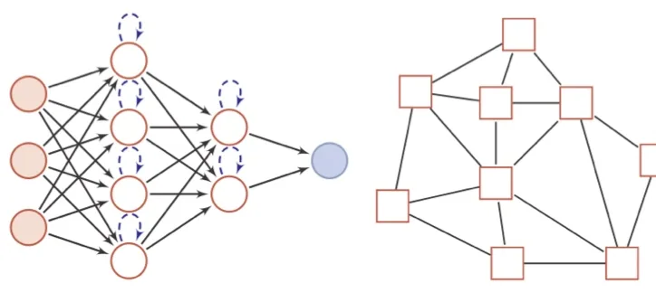

计算机视觉 · 第 5 章 前馈神经网络
5.2 神经网络的结构与发展历程
一个神经元只能画一条线，把许多神经元按层接起来才有「网络」。这一节给出人工神经网络的定义与画法约定，再用五个阶段回顾这门技术从 1943 年一路走到深度学习的曲折历程——两次热潮、两次低谷，每一次起伏背后都有具体的技术原因，而理解这些原因，比记住年份更重要。
1. 人工神经网络是什么
人工神经网络是模拟人脑神经网络而设计的一种计算模型，它从结构、实现机理和功能三个方面模拟人脑神经网络。人工神经网络由神经元模型构成，这种由许多神经元组成的信息处理网络具有并行分布结构：信息同时在其中很多个神经元上处理，而不是像传统程序那样一步一步串行执行；知识也不是存在某一个单元里，而是分布在整个连接权重上。
画图时有一个约定要记住：圆形节点表示一个神经元，方形节点表示一组神经元。后面的网络结构图都遵循这个约定，看到方框就不要再数成单个神经元了。

2. 神经网络发展史：五个阶段
神经网络的发展大致经过五个阶段，两次进入低谷又两次复兴。
（1）第一阶段：模型提出
1943 年，心理学家 Warren McCulloch 和数学家 Walter Pitts 最早描述了一种理想化的人工神经网络，并构建了一种基于简单逻辑运算的计算机制，他们提出的模型称为 MP 模型——这是神经网络的起点，它第一次说明「由阈值单元组成的网络可以计算逻辑函数」。
阿兰·图灵在 1948 年的论文中描述了一种「B 型图灵机」（赫布型学习），把「连接强度可以随经验改变」这一想法提了出来。1951 年，McCulloch 和 Pitts 的学生 Marvin Minsky 建造了第一台神经网络机，称为 SNARC。1958 年，Rosenblatt 最早提出可以模拟人类感知能力的神经网络模型，称之为感知器（Perceptron），并提出了一种接近于人类学习过程的训练方法。到此，神经网络具备了模型、硬件与学习算法三件套。
（2）第二阶段：冰河期
1969 年，Marvin Minsky 出版《感知器》一书，书中的论断直接将神经网络打入冷宫，导致神经网络十多年的「冰河期」。他们发现的两个关键问题是：
- 基本感知器无法处理异或（XOR）回路——单层感知器是线性分类器，而异或问题线性不可分；
- 电脑没有足够的能力来处理大型神经网络所需要的很长的计算时间。
第一个问题是理论上的（要解决它必须引入隐藏层与非线性），第二个问题是工程上的（只能等硬件发展）。1974 年，哈佛大学的 Paul Werbos 首次提出了如何训练一般网络的学习算法，但当时未受到应有的重视。1980 年，Kunihiko Fukushima（福岛邦彦）提出了一种带卷积和子采样操作的多层神经网络：新知机（Neocognitron）——它就是后来卷积神经网络的思想源头。
（3）第三阶段：反向传播算法引起的复兴
1983 年，物理学家 John Hopfield 对神经网络引入能量函数的概念，并提出了用于联想记忆和优化计算的网络（称为 Hopfield 网络），在旅行商问题上获得当时最好的结果，引起轰动。1984 年，Geoffrey Hinton 提出一种随机化版本的 Hopfield 网络，即玻尔兹曼机。1986 年，David Rumelhart 和 James McClelland 对于联结主义在计算机模拟神经活动中的应用提供了全面的论述，并重新发明了反向传播算法；同年，Geoffrey Hinton 等人把反向传播算法引入多层感知器。1989 年，LeCun 等人将反向传播算法引入了卷积神经网络，并在手写体数字识别上取得了很大的成功——这条线一直连到今天的深度学习。
（4）第四阶段：流行度降低
在 20 世纪 90 年代中期，统计学习理论和以支持向量机（Support Vector Machine，SVM）为代表的机器学习模型开始兴起。相比之下，神经网络的理论基础不清晰、优化困难、可解释性差等缺点更加凸显，神经网络的研究又一次陷入低潮。注意这一阶段的低谷与第二阶段不同：这次不是因为算不出，而是因为别的模型在当时的任务上表现更好、理论更清楚。
（5）第五阶段：深度学习的崛起
2006 年，Hinton 等人发现多层前馈神经网络可以先通过逐层预训练，再用反向传播算法进行精调的方式进行有效学习，回答了「深层网络到底能不能训」这个问题。此后深度神经网络在语音识别和图像分类等任务上取得巨大成功。
课件特别提到 AlexNet：这是第一个现代深度卷积网络模型，是深度学习技术在图像分类上取得真正突破的开端；它不用预训练和逐层训练，首次使用了很多现代深度网络的技术。与此同时，随着大规模并行计算以及图形处理器（Graphics Processing Unit，GPU）的普及，计算机的计算能力得以大幅提高；可供机器学习的数据规模也越来越大。在计算能力和数据规模的支持下，计算机已经可以训练大规模的人工神经网络。
注记：课件把 AlexNet 记为 2013 年，实际上 AlexNet 是在 2012 年的 ILSVRC 图像分类竞赛上夺冠并引起轰动的（论文发表于 2012 年）。另外，「逐层预训练 + 精调」这一套做法在今天的大规模网络里已基本被端到端训练取代，但它在当时确实是打开深度网络训练之门的钥匙。
本节小结
- 人工神经网络是模拟人脑神经网络的计算模型，从结构、实现机理与功能三方面模拟人脑，由神经元构成，具有并行分布结构；画图约定是「圆形是神经元、方形是一组神经元」；
- 五个阶段：模型提出（1943 MP 模型 → 1958 感知器）→ 冰河期（1969《感知器》指出异或不可解与算力不足，1974 Werbos 学习算法、1980 新知机）→ 反向传播引起的复兴（1983 Hopfield 网络、1984 玻尔兹曼机、1986 重新发明反向传播、1989 用于卷积网络）→ 流行度降低（90 年代中期统计学习与 SVM 兴起）→ 深度学习的崛起（2006 逐层预训练 + 精调，GPU 与数据规模，AlexNet）；
- 两次低谷的原因不同：第一次是理论与算力双重不足，第二次是被同期更好的模型比下去；
- 注记两点：AlexNet 实际发表于 2012 年（课件记作 2013 年）；「逐层预训练 + 精调」今天已被端到端训练取代，但它是当年打开深层网络训练之门的钥匙。